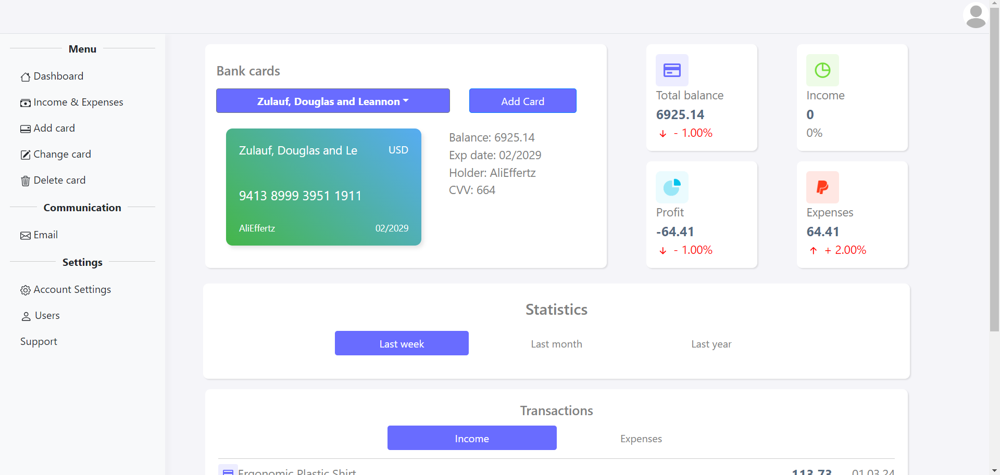

Застосувати селектори тегів, класів і ідентифікаторів у вашому власному веб-застосунку. Додайте HTML-код, CSS-код та зображення для кожного селектора у відповідні пункти вашого звітного HTML-документа.
Використати сусідні, дочірні селектори, селектор атрибута та універсальний селектор за вашим власним бажанням. Покажіть код цих селекторів у відповідному розділі вашого звітного HTML-документа.
Застосувати каскадні таблиці стилів для стильового оформлення текстових елементів, включаючи шрифти, контури, фон, колір тексту, CSS-властивості для таблиць та багаторівневих списків.
Стильове оформлення резюме згідно макету у Figma.
Створення макету звітного HTML-документа у Figma.
Виконання першого етапу верстки звітного HTML-документа, а також стильового оформлення.
Відображення результатів лабораторних робіт №1 та №2 у вашому звітному HTML-документі.
Запушити результати у відповідний репозиторій звітного HTML-документа.
Розмістити посилання на живі сторінки резюме, власного веб-застосунку та звітного HTML-документа у класрумі.
